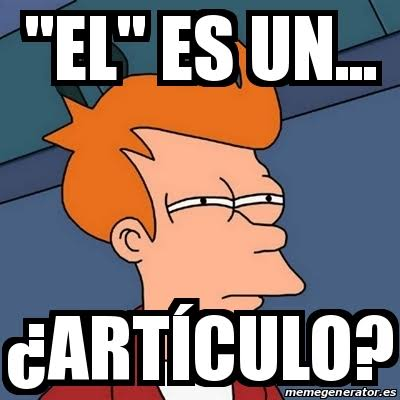

Articulo
• Definición propia: Es esa palabrita corta que va antes del sustantivo para presentarlo y avisarnos si estamos hablando de algo conocido o de algo cualquiera.
• Banco de palabras: El, la, los, las, un.
• Oración de aplicación: El programador se quedó trabajando toda la noche para arreglar el fallo.
